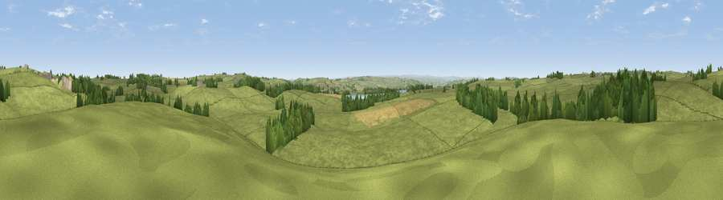

Viewpoint near Kirkheaton
#24993 in England · top 60% of its area beats it · near Kirkheaton · access?Where it is
The exact computed spot (NY 97475 78175). Click the marker for map links.
Public access: no public right of way or access land is recorded at this exact spot — it may be on private land. Computed from Natural England's CRoW access layer and OpenStreetMap rights of way — not the legal definitive map. Always verify locally.
The view, rendered

A 360° render of this exact spot computed from the terrain model, tree cover and land cover — summer colours, afternoon light, calibrated against photographs of famous viewpoints. Real trees, hedges and buildings will differ in detail.
The panorama
Grey silhouette: terrain skyline in each direction (720 bearings, Earth curvature and refraction included). Dashed green: skyline with trees (+15 m) and buildings (+8 m) as obstacles. Blue strip: how far the ground is visible on each bearing.
Where the view opens
Wedge length = distance to the farthest visible ground on that bearing (vegetation-aware). Rings at 10, 25 and 50 km.
What fills the view
88% grassland · 8% woodland · 3% cropland ·
Angular shares of the visible panorama (visual magnitude), not map area. Landscape diversity 0.20 (0–1 Shannon).
Key numbers
More beautiful places nearby
The staircase of upgrades: each row has a higher view potential than everything closer. Driving times are estimates from straight-line distance, calibrated against real road routing — check an actual route before setting out.
| Place | Direction | Drive | Score |
|---|---|---|---|
| Moot Law | ESE · 4 km | ~10 min | 65.2 |
| Duns Moor | SSE · 6 km | ~12 min | 65.6 |
| Viewpoint near West Woodburn | NW · 8 km | ~16 min | 69.1 |
| Viewpoint near West Woodburn | NW · 8 km | ~16 min | 73.4 |
| Darden Rigg | N · 18 km | ~32 min | 77.0 |
| Viewpoint near Thropton | NNE · 21 km | ~35 min | 81.8 |
| Simonside | NNE · 21 km | ~36 min | 82.2 |
| Viewpoint near Hepple | N · 21 km | ~36 min | 82.4 |
55.09799, -2.04111 · source: screening · position refined by local search. Computed location — check access rights before visiting.